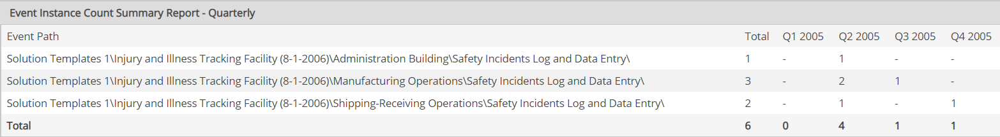

The Event Instance Count Summary Report is used to obtain a statistical count of the number of events per location, by week, month, quarter or year.
Some examples of Event Instance Count Summary Reports are:
The report will show one row for each monitored requirement for an Event Log. The columns are the time periods and the properties selected for inclusion in the report.
